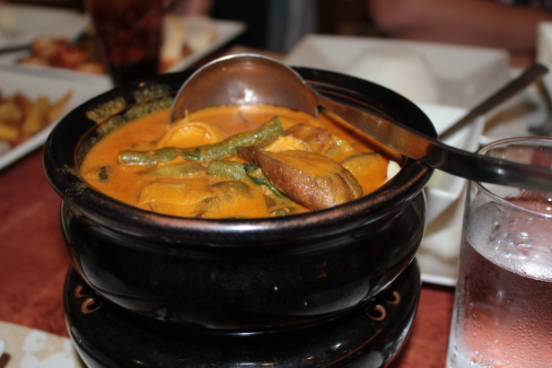

Kare-kare: Marion's Kitchen's Style

Slow-cooked Veal Shanks Stew in Velvety Peanut Sauce
Ingredients
- 1kg (2 lb 3 oz) beef osso bucco (beef shanks)
- sea salt and ground black pepper, to season
- 2 tbsp vegetable oil
- 1½ tbsp annatto seeds*
- 2 brown onions, sliced
- 5 cloves garlic, finely chopped
- 1.5 litres (1.6 qt) beef stock
- 2 tbsp sticky rice (also called glutinous rice)
- 1 tbsp crushed roasted peanuts
- 4 medium-sized Japanese eggplant
- ¼ cup smooth peanut butter
- 250g (9 oz) snake or green beans, cut into 5cm (2”) pieces
- ¼ cup apple cider vinegar
- 2 tbsp fish sauce
- 2 tbsp brown sugar
- steamed rice, to serve
Steps
-
Season pieces of osso bucco all over with salt and pepper. Place
vegetable oil into a large saucepan over medium-high heat, then add the
seasoned osso bucco. Cook for 3 minutes until brown on the one side,
then flip and cook for another 3 minutes until the other side has
coloured too. Transfer beef to the pot of a slow cooker.
-
Reduce heat to medium and saute annatto seeds for 1-2 minutes until the
excess oil becomes red. Now remove and discard the annatto seeds,
leaving the remaining oil behind. Add in the onion and garlic, plus a
good pinch of salt, and saute for a further 2 minutes until tender and
translucent. Add 1 cup of beef stock to deglaze the pan and, using a
wooden spatula, gently scrape off any bits from the bottom of the pan
— they're full of flavour! Transfer liquid and softened onions
to the slow cooker.
-
Place a small frying pan over high heat and add the sticky rice. Keeping
a close eye on it so it doesn't burn, gently toast the rice until
it's a deep golden colour. Transfer to a mortar and use a pestle to
grind to a fine powder.
-
Turn the slow cooker on high heat. Add the ground rice to the slow
cooker followed by the peanuts, eggplant, peanut butter and the
remaining beef stock. Give everything a gentle mix to incorporate the
peanut butter into the liquid. Then cover the stew with a lid and leave
to do its thing for 3 hours, or until the meat is falling off the bone.
(If your slow cooker doesn't have a high setting, you can put it on
low for 6 hours.)
-
After the first cook is complete, open the lid of the slow cooker and
add in the beans. Season the stew with the vinegar, fish sauce and brown
sugar. Give everything a good mix around to make sure all of the
ingredients are well incorporated, then place the lid back on and cook
for a further 20 minutes until the beans are tender. Serve with steamed
rice.